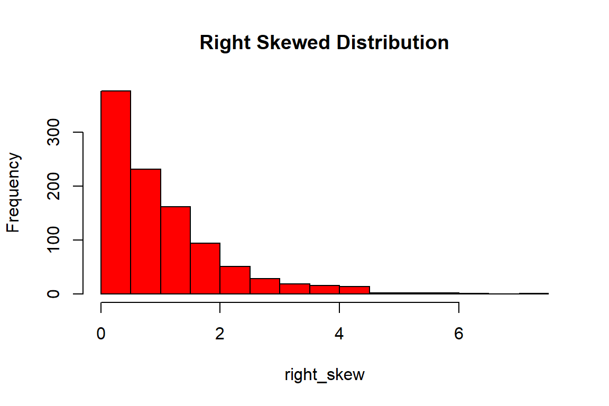
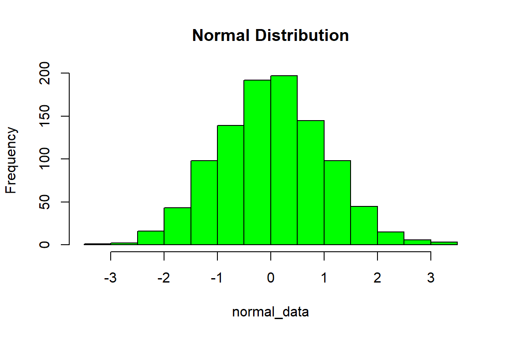

Distribution shape matters.
set.seed(123) right_skew <- rexp(1000) hist(right_skew, col="red", main="Right Skewed Distribution")

normal_data <- rnorm(1000) hist(normal_data, col="green", main="Normal Distribution")

Understanding shape helps in: